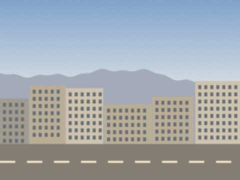

20 June 2010 The district held an aitysh in the square by the House of Culture, the first in eleven years. Two young akyns, a boy from Kyzyl-Adyr and a girl from the hill villages, improvised against each other for an hour. The girl won. The boy was very good also, but the girl made the district head laugh and then made him go red, in the same verse. That is the art.
They asked me to be in the jury. I gave the girl ten and the boy nine and a half. Then I went home and could not sleep from happiness.
 The square before the aitysh.7 March 2010 On 1 September 1962 I became the director of the district House of Culture. I was twenty-eight and I owned one suit. The building had a stage, forty broken chairs and a portrait of a man with a moustache on the wall of the hall. The first thing I did was to ask the caretaker to open the windows. He said: "Director, it is winter." I said: "Yes, but it smells of a funeral."
By spring we had an ensemble of twelve, a children's group, and a theatre circle. I stayed thirty-one years. The chairs we replaced one by one, as the budget allowed. The portrait stayed. 4 October 2009 Last week a girl came to my house, eleven years old, with her father. She wants to learn the komuz. In my day only the boys played, the girls sang or danced. The father said he does not mind, he hears she has talent. She does. She held the komuz like a loaf of bread, with both arms, and played the first line of the "Ak Kalpak" song, right the first time.
I said: you will come on Wednesdays after school. Bring bread for the old man. Her father said, "And for the teacher's dog also?" Yes, also for the dog. 23 July 2009 Thirty-six years ago tonight. I was director of the House of Culture then, thirty-nine years old. Three days after the mud they brought the survivors to our district, to the school sports hall, and I took the komuz players there. Not to sing. We did not know what to do. We sat. An old woman asked someone to play, "the one that goes on the first string". We played it. Nobody spoke. The woman cried and said thank you.
I have never written a song about Sary-Say. I wrote one line only, in 1974, and I still have it: "The river knows the way, the people don't." I do not know how it continues. 15 March 2009 The bulb came on at six and everybody stopped talking.
We looked at it like at a guest who was late.
The grandmother said, "Well? Sit down, sit down."
The bulb sat on its wire and was embarrassed.
Cholpon says I should explain: the winter was long, the light came back on Friday. That is all. |